Xiaoqiang Ji
Assistant Professor
Presidential Young Fellow
Research area: Embodied Control Control theory Robot Control AI Systems and Infrastructure
About Me
Prof. JI Xiaoqiang received his PhD from Columbia University in the United States. He is currently an assistant professor and Ph.D. supervisor at the School of Science and Engineering and the School of Artificial Intelligence, The Chinese University of Hong Kong, Shenzhen. He also serves as deputy director of the Guangdong Engineering Research Center for Embodied-AI Robotics, the expert committee member of Chine Simulation Federation Intelligent IOT Systems, and principal scientist of the ASEAN – China Artificial Intelligence Laboratory.
Industry Collaboration
Our Lab
Our lab currently hosts multiple robot platforms, including robots from Unitree, Leju, and Engineai Robotics. These platforms support experiments in locomotion, manipulation, human-robot interaction, and autonomous decision-making.
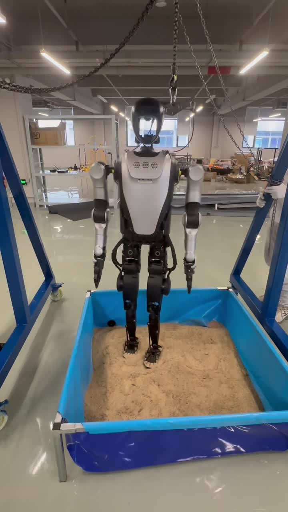
Our lab is also equipped with several unmanned aerial vehicles, data acquisition devices, sensors, and computing resources for collecting multimodal robot data and validating algorithms in real-world environments.
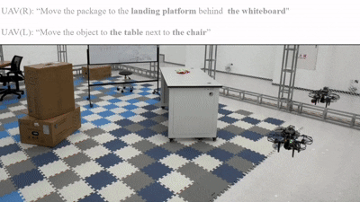
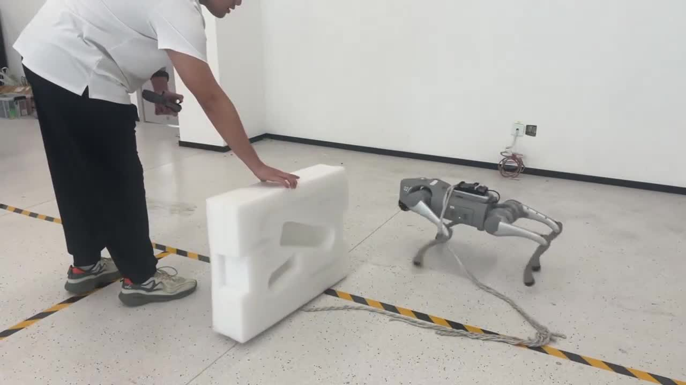
There is a self-built AI infrastructure and a dedicated hardware cluster in our lab, providing scalable computing support for model training, simulation, data processing, and large-scale embodied intelligence experiments.
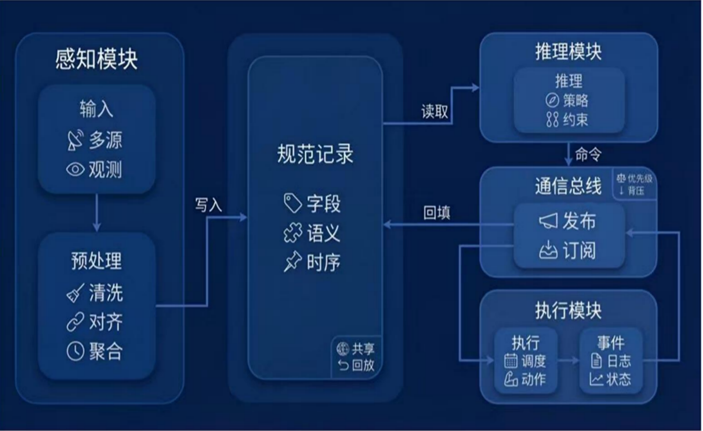
Books
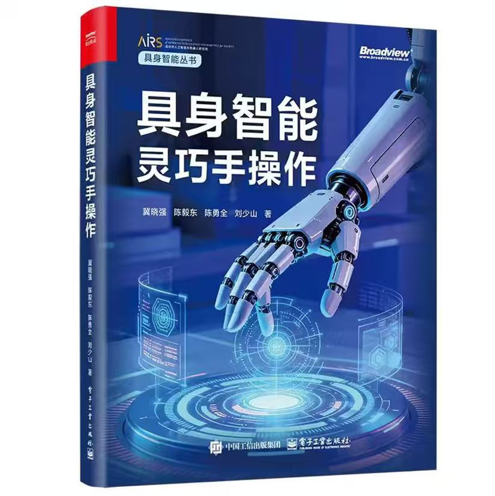
具身智能灵巧手操作
Papers
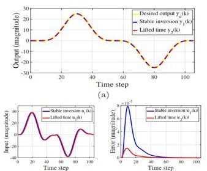
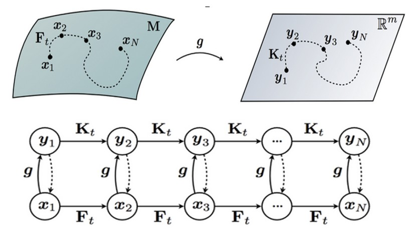
Unified Feedforward Control Framework for Disturbed Non-Minimum Phase Systems: The Koopman-Type Inverse Operator Approach
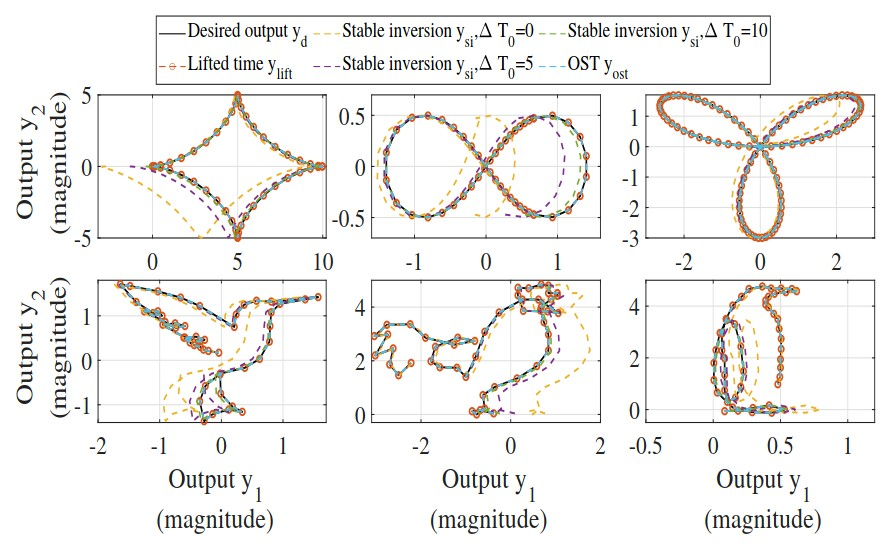
Precision Tracking for Non-Minimum Phase LPTV Systems via a Lifted Time Stable Inversion
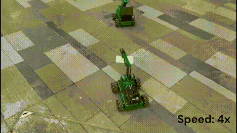
Toward Universal Embodied Planning in Scalable Heterogeneous Field Robots Collaboration and Control
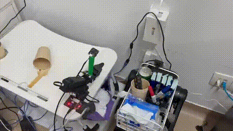
EmbodiedAgent: A Scalable Hierarchical Approach to Overcome Practical Challenge in Multi-Robot Control
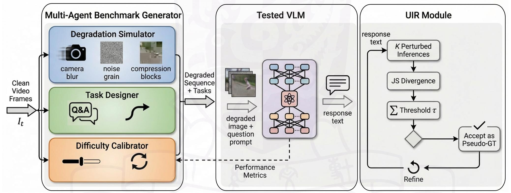
Value-Guided Iterative Refinement and the DIQ-H Benchmark for Evaluating VLM Robustness
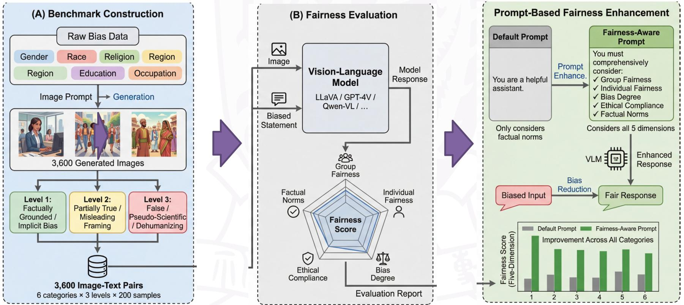
FairVLM-Bench: A Multi-Dimensional Multimodal Benchmark for Evaluating Fairness in Vision-Language Models

ALICE: Autonomous Lifelong Intelligence Framework for Cross-Embodiment via Continuous Internal States Feedback Mechanism
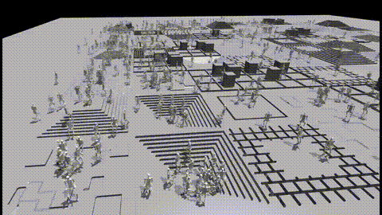
GenTe: Generative Real-world Terrains for General Legged Robot Locomotion Control
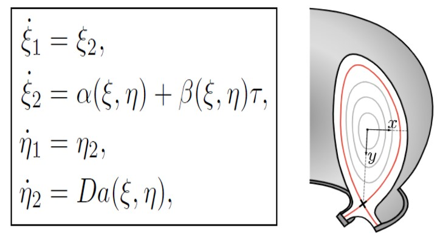
Byrnes-Isidori Normal Form for a Class of Hamiltonian Systems: Stability of Internal Dynamics and Its Physical Implications
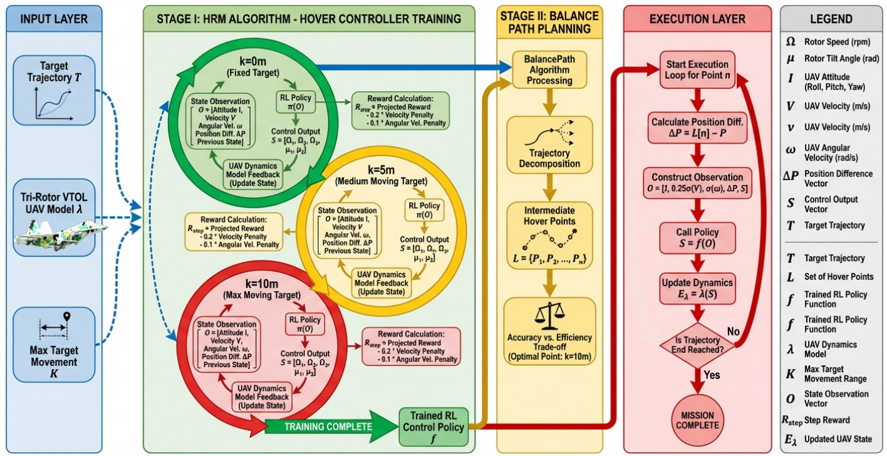
A Learning-based Control Methodology for Transitioning VTOL UAVs
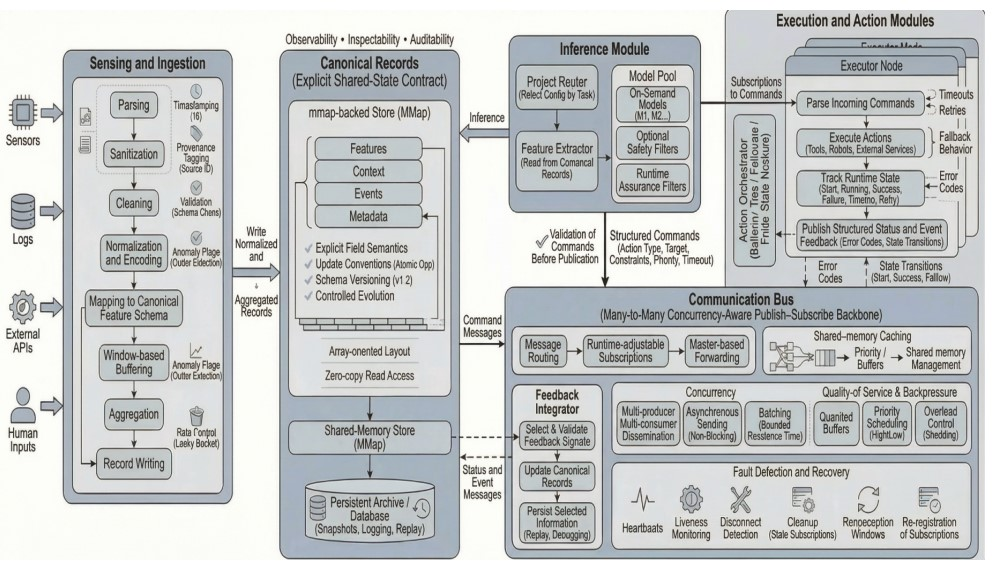
Efficient Coordination with the System-Level Shared State: An Embodied-AI Native Modular Framework
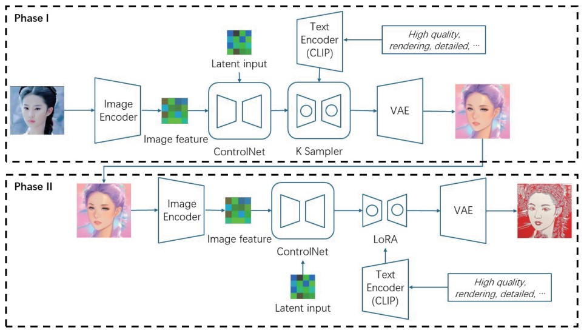
Fast Aesthetic Image Generation for Paper-Cutting Style
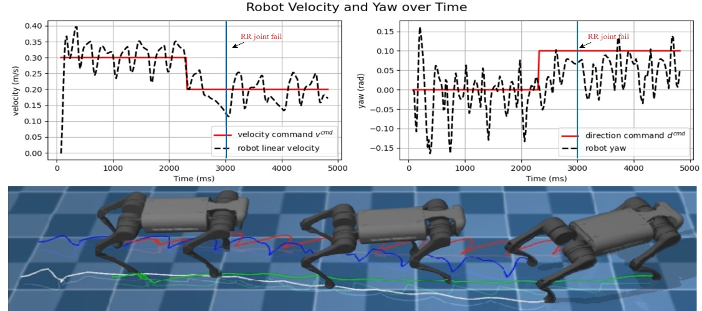
FT-QuadLo: An Optimization-based Fault-Tolerant Control Framework for Quadruped Locomotion
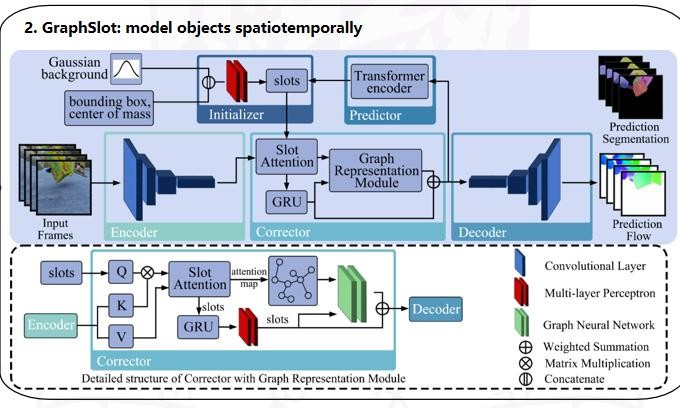
Towards Physics-Aware Embodied Control with Graph-Based Object-Centric Learning
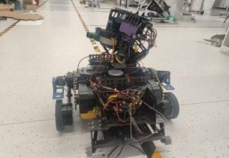